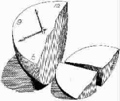

生物钟规定健身时刻
●〔美〕迈克尔·斯莫伦斯基 琳恩·兰伯
○王淑玫 译
最佳运动表现的时机
生理节奏的起伏，主宰着体能的表现。
在你的身体最适应的时候运动，会收获许多的附加价值，你的表现会比较好，不容易发生运动伤害，你也会更享受运动的快感。
一般而言，最佳生理状态和最不容易发生运动伤害的时间是在黄昏前后，有60%以上的顶尖运动员认为，自己体能的巅峰时间是在下午，通常是在下午3点到6点之间。
重要的体育比赛也通常选在黄昏时分进行，这是基于观众时间的考虑。但是这种非生理时钟的考虑，反而让人们忽略了这正是最佳运动时机的事实。除此之外，观赏者的专注力和情绪，同样也受到生理时钟的影响，在下午和刚入夜时分，观众比较能满足于坐着欣赏体育活动。
为了测量一天中最佳的运动时间，科学家要求参与研究的人员在不同的时间内进行相同的体育活动。
早上6点到9点。在睡眠时降低的体温开始逐渐升高。较低的体温，也意味着许多对体能表现起重要作用的生理功能都处于休眠的状态，例如柔软度、力量和反应速度。这意味着在早上需要花更多的时间、缓缓地进行热身运动。
刚起床时，关节部位会比较僵硬。一旦开始活动，僵硬的感觉会慢慢消失。但是在早上做伸展运动时仍然要小心，因为关节的伸展度在一天之间，有20%的差异。体温较低的事实，使得早上较适合做耐力性的运动，而非爆发性的运动。早上也是手的稳定度最高的时候，这对于射箭和射击的选手很重要。这两项运动同时也需要强大的握力，这项能力则在黄昏前后达到巅峰。准确度在体温低的时候最高，但是速度是随着体温而攀升的。
一般而言，随着年龄的增长，我们会变得越来越早起。到了50岁以后，我们就可能会比年轻时较能享受在早上散步、慢跑及打高尔夫球。
早上6点到9点间，最好吃一顿健康的早餐。这对体操选手、骑师、拳击手、摔跤选手，以及其他需要维持特定体重的选手很重要。早上摄取的食物比较容易被消耗掉，而非变成脂肪储存起来。
早上11点。身体对肌肉疼痛的忍耐度，在这时到达巅峰。那种过度运动后两三天才产生的肌肉疼痛，在晚上运动的人当中表现较为轻微。
下午2点到3点之间。这是午餐后昏沉的时间。早上做过激烈运动的人，在这段时间可能会特别困倦。选择在这段时间做激烈运动的人，动作比较迟缓而且体力较差。不过，运动会提升这段时间后的清醒度。在这段时间做几分钟的和缓运动，例如在街上快步走，能让员工不至于在午后陷入睡意的泥淖中。
下午2点到晚上7点之间。肌力和握力在这段期间达到高峰。这两种能力在一天之间高低差是6%。
下午3点到5点之间。呼吸道最舒缓的时间，这段时间，呼吸最顺畅。在这时候运动较不费力。
下午5点到晚上9点之间。肌肉最有力的时间，同时也是手眼协调最好的时间。
下午6点到晚上8点之间。对绝大多数人而言，体温在这段时间到达最高点。这是最适合做需要速度和爆发力的运动的时间，例如短跑、游泳等。这也是最适合做需要精准拿捏时机和肌肉控制的运动的时间，例如体操和花样滑冰。基本上，在体温到达每日最高点的前后约3个小时的时间内，是体能状态的巅峰时期。同时，在达到最高体温时，也是最能忍受肉体疼痛的时候。
主场优势包括了时间优势
斯坦福大学医学院研究了25年周一夜晚美式足球赛，他们将研究重点放在西岸球队与东岸球队的比赛上。由于顾及到电视直播，所以不论球赛是在东岸还是在西岸进行，比赛开始的时间都是东岸时间的晚上9点。
当西岸球队与东岸球队交锋时，基本上他们是在生理时钟下午6点时打球，也就是在体能的巅峰状态下打球。相对的，当东岸球队在比赛时，他们不但从生理时钟9点时开打，还得一直到午夜才结束。这意味着，他们将在每日体能最差的状态下进行比赛。
这项研究仔细分析了1970年到1994年中的63场球赛。他们发现西岸球队不但赢的场次比较多，赢的分数也比较多。
研究人员说，目前不管是东岸还是西岸球队，都已经将时差、睡眠不足等条件列入考虑中。西岸球队如果要到东岸比赛的话，通常会提前两天出发，东岸球队则会提前一天出发。研究人员建议，如果想要改善东岸球队的表现的话，应该在比赛时将生理时钟调到与比赛发生场地一致的时间。另一项针对NBA篮球赛的研究，也显示出类似的结果。但是针对棒球赛的研究结果则恰好相反。研究人员认为这可能是因为棒球球队有白天也有晚上赛程，而且他们到外地比赛的机会比足球队更多，所以球赛进行时间的影响反而没那么大。无论如何，不管是东岸还是西岸的球队，作为主场队伍时，赢球的几率就比较高。
尽管你不是职业运动员，在旅行时也别忘了——恪守家乡的时间对你比较有利。在遇到短程旅行时，不妨将运动时间调到你在家乡的时段。
时差降低运动表现
时差对运动表现有着强烈的不良影响，造成睡不好、专注力降低、易怒、情绪不佳、对时间和距离的掌控失常、肠胃不适等问题。在跨越多个时区后的头两三天，这些问题最为严重。一般的通则是每跨越1个时区，就需要1天来调整。但是，想要让所有的生理节奏都恢复正常，可能会需要两三个礼拜的时间。
甚至于在同一个时区内的南北向飞行，都可能会让运动员感到疲惫。如果在训练期间就能考虑到时差的问题，并且依此改变训练的时间，运动员可能会表现得更好。不过，想要在行前就完全将身体调整到比赛地点的时间，是相当困难的，因为这还牵涉到调整用餐、工作和其他社会性提示的时间，才能完全调整生理时钟。
目前，美国的奥林匹克委员会鼓励运动员将赛前训练，改在和比赛地点相同的时区内进行，这是一项需要付出非常昂贵的代价的变化。许多队伍在比赛前2到4周就抵达比赛地点。有些队伍则是将旅程分为两段，在中途停留几天，以降低时差所造成的压力。
运动有助于睡眠吗
大多数人相信运动有助于睡眠，这是因为大多数人分不清楚疲倦与睡意的区别。这两者大为不同。如果你健行了10英里，你会很疲倦，但是如果前一天晚上睡眠充足的话，你不会比平常更想睡。加州大学圣地亚哥分校的一项研究分析发现，一个人做过运动的时候比没做过运动的时候多睡约10分钟。运动的时间越久，也就睡得越久。但是差别是以分钟计，而非小时计。
是否做过运动对入睡速度也没有影响。运动对睡眠的冲击很可能是在于体温上的变化。根据研究显示，体温上升然后再下降的变化，有助于使人进入休息功能强大的深度睡眠状态。别担心重要比赛前的睡眠问题。最好也不要服用安眠药，因为这样反而可能会有不良影响。而轻微的失眠可能不会影响到你的表现，但是保证比赛前数天和数周的良好睡眠比较重要。
在固定的时间获得充足的睡眠，将使得你在压力面前仍然可以睡得好。
过度的运动可能会造成无法入睡。只在周末运动的上班族，可能以为自己会累得倒头就睡，但是肌肉疼痛很可能会破坏睡眠。很少运动的人，应该逐渐增加运动量，才有可能改善睡眠，而非干扰睡眠。
正如安眠药无法更进一步优化良好的睡眠，相同的，运动对于一个睡得很好的人也没什么影响。不过，运动可能对于那些失眠者、倒班工作者和旅客的睡眠很有帮助。斯坦福大学一项关于失眠症的研究显示，利用日光或人造日光来调节生理时钟的疗法，对于睡眠的改善最有效。其次，则是运动。采用固定就寝时间或是不睡午觉的策略疗法，几乎没有任何效果可言。
斯坦福的另外一项比较做运动的失眠者和不运动的失眠者的研究则显示，在开始运动后，他们睡眠的时间较往常多了一个小时，较快入睡，较少打瞌睡，睡眠的质量也提高了。研究人员表示，对于一些有睡眠问题的年长者而言，适度的运动或许会有正面的效果。
年长者的睡眠问题往往和生理时钟有关，其中包括了太早就寝、频频惊醒、太早起床等。如果这符合你的情况的话，夜间运动或许会改善状况。
倒班工作者和时差旅客的问题在于失调的生理时钟。运动和沐浴阳光，有助于加速协调生理与外界时钟的运转。目前仍然不清楚，到底要多大的运动量才能调整生理节奏，以及最佳的运动时机在什么时候。
(郭安琪摘自天津教育出版社《发现你的健康密码》一书，吟龙图)